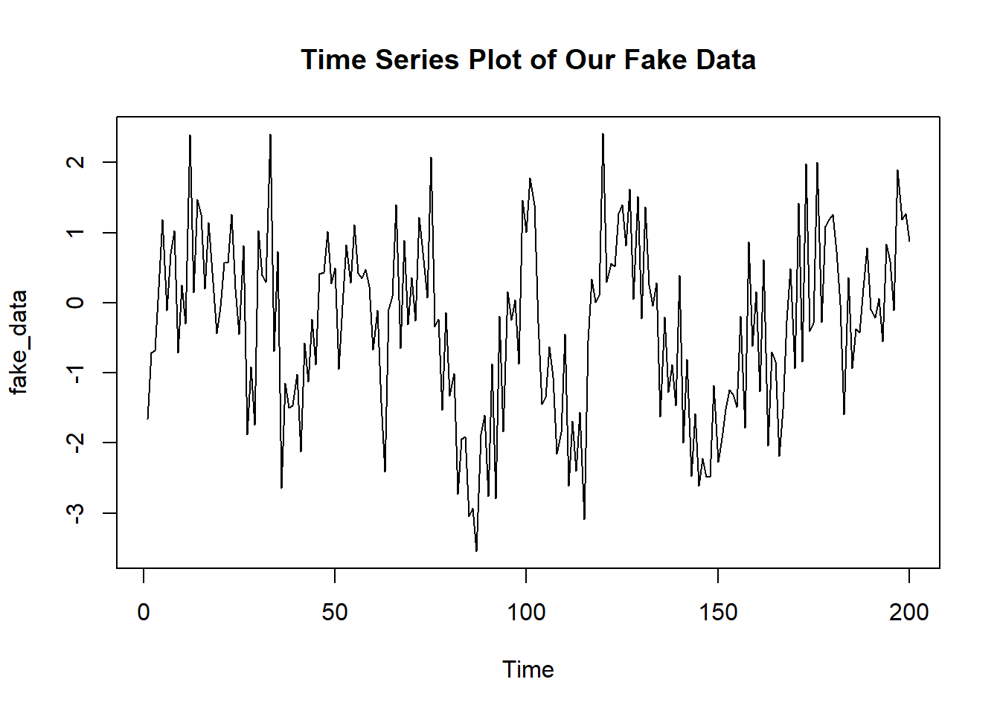

This post looks at modeling autoregressive models. Autoregression is typically important when dealing with time series analysis. The general idea is that the past value of a repeatedly measured item will be indicative of its future value. A good example is a stock. Today’s stock price could be modelled as a function of yesterday’s stock price. While this isn’t entirely true, it does approximate a decent model.
In this case I am going to look at an AR(3) model. Thus the model form would take on the following data generating process:
\[y_n \sim N(\alpha + \beta_1y_{n-1} + \beta_2y_{n-2} + \beta_3y_{n-3}, \sigma)\]
And we can used a built in feature of R to help us simulate these data. Note that I have not specificed a moving average.
fake_data <-arima.sim(n = 200, model = list(ar = c(.2, .5, .05)))ts.plot(fake_data, main = "Time Series Plot of Our Fake Data")
writeLines(readLines("stan_ar_models.stan"))// From https://mc-stan.org/docs/2_18/stan-users-guide/autoregressive-section.html
// Allowing for flexible autoregression for time series modeling
data {
int<lower=0> K; // Order of Autoregression
int<lower=0> N; // number of observations
real y[N]; // Outcome
}
parameters {
real alpha;
real beta[K];
real sigma;
}
model {
for (n in (K+1):N) {
real mu = alpha;
for (k in 1:K)
mu += beta[k] * y[n-k];
y[n] ~ normal(mu, sigma);
}
}library(rstan)## Loading required package: ggplot2## Loading required package: StanHeaders## rstan (Version 2.18.2, GitRev: 2e1f913d3ca3)## For execution on a local, multicore CPU with excess RAM we recommend calling
## options(mc.cores = parallel::detectCores()).
## To avoid recompilation of unchanged Stan programs, we recommend calling
## rstan_options(auto_write = TRUE)rstan_options(auto_write = TRUE)
model <- stan_model("stan_ar_models.stan")Now we need to format our data for our Stan program:
stan_dat <- list(
N = length(fake_data),
K = 3,
y = as.vector(fake_data)
)Let’s run our model with the usual conditions.
fit <- sampling(model, stan_dat,
cores = 2, iter = 1000,
refresh = 0, chains = 2)And as always special thanks to Michael Betancourt for these amazing tools for diagnostics.
util <- new.env()
source('stan_utilities.R', local=util)util$check_all_diagnostics(fit)print(fit, pars = "beta")## Inference for Stan model: stan_ar_models.
## 2 chains, each with iter=1000; warmup=500; thin=1;
## post-warmup draws per chain=500, total post-warmup draws=1000.
##
## mean se_mean sd 2.5% 25% 50% 75% 97.5% n_eff Rhat
## beta[1] 0.10 0 0.07 -0.04 0.05 0.10 0.15 0.24 930 1
## beta[2] 0.48 0 0.07 0.34 0.43 0.47 0.52 0.61 1072 1
## beta[3] 0.06 0 0.07 -0.08 0.01 0.06 0.11 0.20 1115 1
##
## Samples were drawn using NUTS(diag_e) at Sat Feb 23 13:36:28 2019.
## For each parameter, n_eff is a crude measure of effective sample size,
## and Rhat is the potential scale reduction factor on split chains (at
## convergence, Rhat=1).
Research and Methods Resources
me.dewitt.jr@gmail.com
Winston- Salem, NC
Copyright © 2018 Michael DeWitt. All rights reserved.